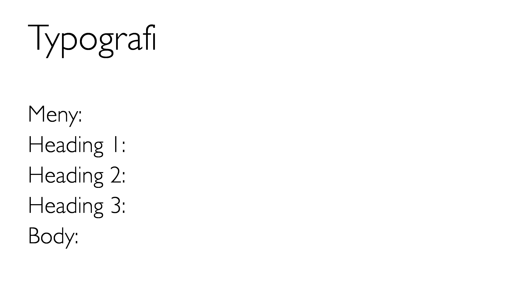
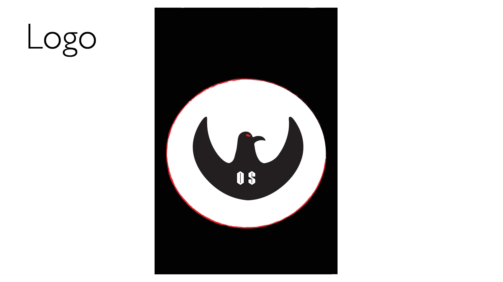
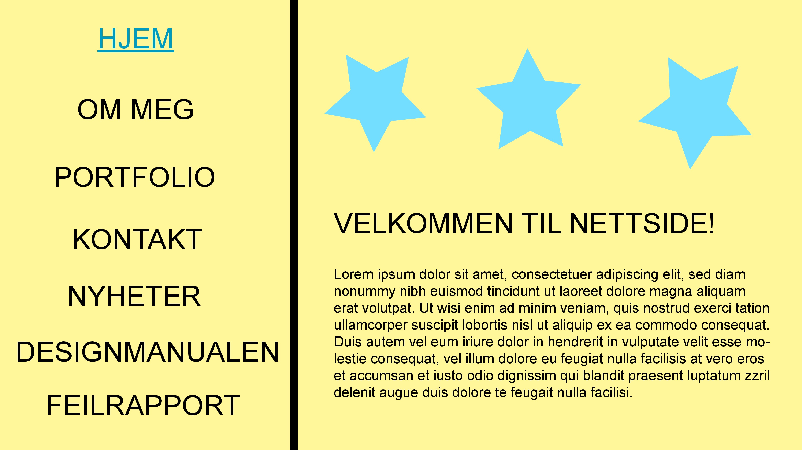
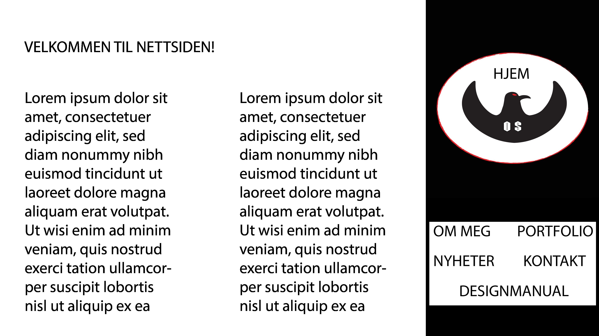
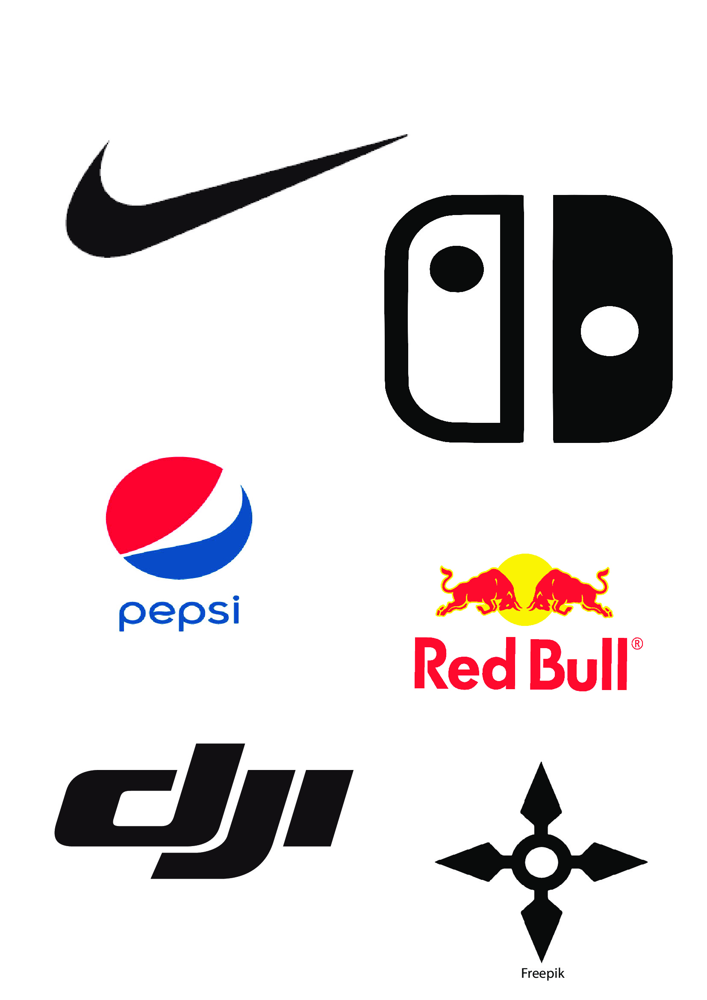
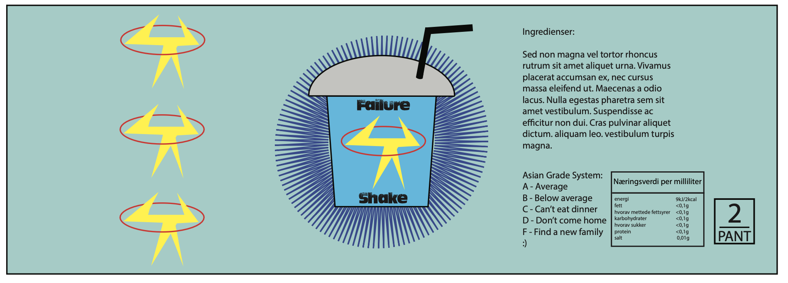
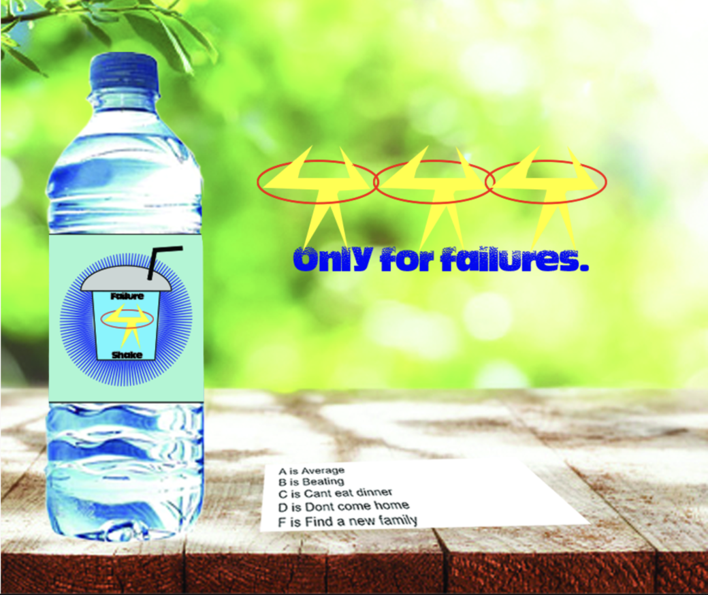

Prosjekter på Bjørnholt vgs.
2021-2022
Dette er den første skoleprosjektetet i Bjørnholt skole. Oppgaven var å lage avatar, så jeg bestemte meg å lage anonymous. Expect us!
Dette er favoritt prosjektet mitt. Oppgaven kan være meg i ferie, være konge eller noe annet. Jeg valgte meg som neon samurai.
Her forteller jeg i fortiden som barn. Jeg er ikke flink å redigere video, men jeg fikk prøve. Hvis video funker ikke, prøv å bruke Google Chrome.
Oppgaven var å lage additiv og subtraktiv fargemodell i Photoshop.
Oppgaven var å planlegge hvordan designet av nettsiden din skal se ut.




Oppgaven var å lage dyrelogo. Jeg valgte ful og gjorde den til "Evil".
Den første oppgaven var å finne 5 logo jeg liker å designet på. Den andre var å lære å bruke "curvature-tool" i illustrator. Jeg bestemte meg å lage shuriken og vil kalle logo, "Shygge".
Logo inspirasjon
Skummel lydprosjekt på skolen. Gjør at vi kan bli bedre når vi bruker lyder.
Oppgaven var å lage skrekkfilm. Vi ble delt i grupper og bestemte å filme på skolen.
Elevene skal utforme ett spill for to spillere som dreier seg om å kaste en terning og samle inn poeng. Spillet har 2 spillere, som spiller i runder. I hver runde ruller en spiller terningen så mange ganger han vil. Hvert resultat blir lagt til hans poeng for hver runde. Hvis spilleren ruller en 1, blir all hans runde poengsum tapt. Etter det er det neste spillers tur. Spilleren kan velge å holde sin poengsum, noe som betyr at hans runde poengsum blir lagt til hans totale poengsum. Etter det er det neste spillers tur. Den første spilleren som når 100 poeng (eller valgfri maxsum) på spillerens totale poengsum vinner spillet.
TerningspillOppgaven var å sende email til folk som jobber med Informasjonsteknologi eller Medieproduksjon. Vi spør etter hva de gjør, hvorfor er de interesert å jobbe på det yrket de valgte, osv.
Oppgaven var å lage avatar men vinter versjon. Ikke spør hvorfor "vinter versjon", men ikke jule versjon. Jeg kommer ikke til å svare spørsmålet.
Oppgaven var å lage et valgfri spill i JavaScript. Jeg valgte å lage et spill som heter Kriminalitet. Spillet handler om en person i Norge vil flytte til USA. Stjel penger og kjøp flybilett for å vinne spillet!
KriminalitetFå 20 poeng for å vinne spillet.
Ping PongOppgaven var å snakke om Søndre Nordstrand også snakke med annet ting.
Oppgaven var å lage et film som varer minimum 2 min. Filmen skal handle om hva som er bra med IM som står for Informasjonsteknologi og Medieproduksjon og hvorfor bør du velge IM på Bjørnholt VGs!
Kort lukketid: Ta kjappe bilder som at vi får fange den fineste bildet
Lang lukkertid: Velger du 30 sek lang lukkertid f.eks. tegner du lys samme som thumbnail jeg gjorde, men du har 30 sek. Rødt sirkel rundt meg.
Word DokumentDe fleste elever på IM tokk bilder og oppgaven vår var å kombinere to ansikt til sammen på Photoshop.

Oppgaven vår var å lage et reklame for brusflaske. Noen valgte parfyme og noen valgte brus som meg.
Steg 1: Lage et merkevare
Steg 2: Lage et forpakning til merkevare (Kan puttes på flaske)
Steg 3: Lage reklame om produktet
Vi har lagd en nettavis. Hver av oss valgte et tema. Jeg valgte "Hvorfor bør du velge programmering?"
NettavisOppgaven var å ta bilder til en fotoserie med temaet kontraster. Jeg skal ha to bilder for hver kontrast:
1. Fargekontrast
2. Lys/mørke-kontrast
3. Størrelseskontrast
4. Formkontrast
Instruksjoner:
Jobb sammen to og to
Finn 3 objekter
Jobb i studio (evnt. klasserom)
Komponer stilleben med objektene og ta bilder
Tenk balanse, det gylne snitt og harmoni
Ta minst tre ulike stilleben hver.
Gjør enkel redigering av bildene i Photoshop eller Lightroom
Individuell innlevering
Oppgaven var å lage et miljø app. Jeg valgde å lage bærekraftig taxi som heter "TaxCheap". Vi brukte Adobe XD.